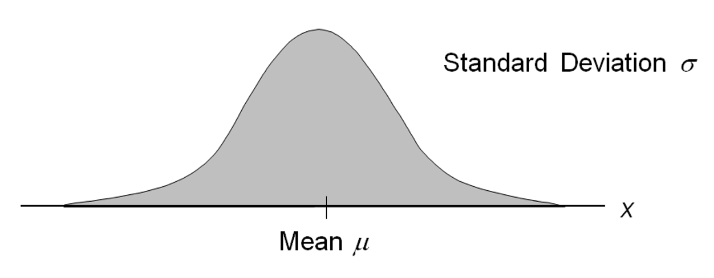
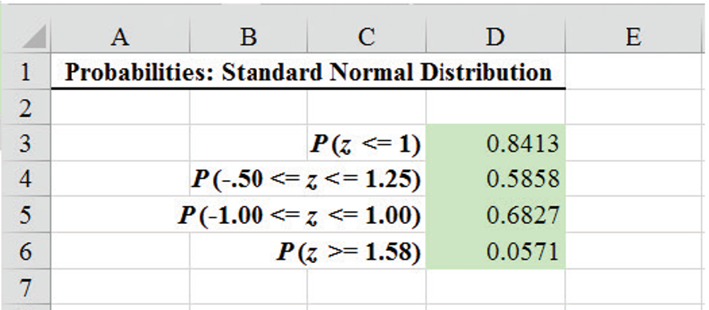
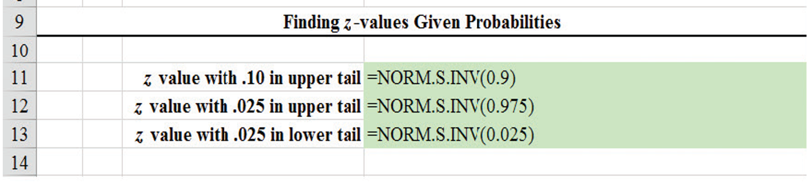
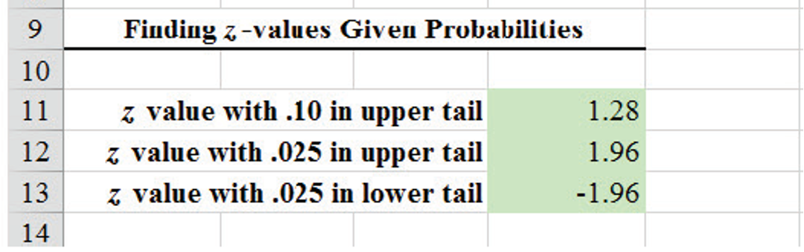
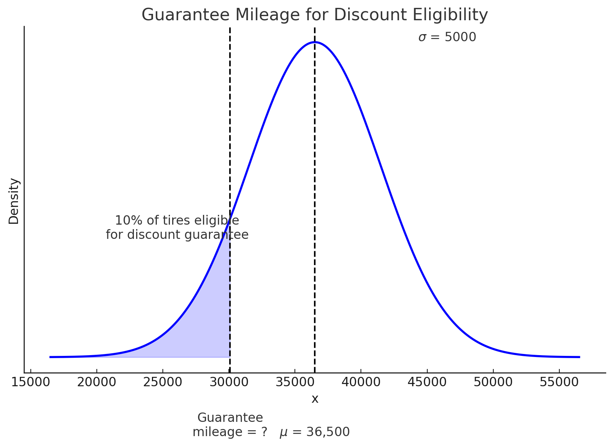
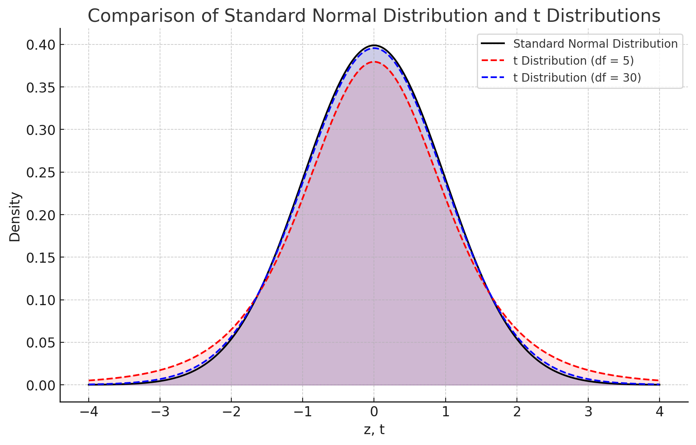

MGMT 30500: Business Statistics
Basic Stat. & Prob. Rvw. 03
Overview
Continuous Probability Distributions
- Definition
- Area as a Measure of Probability
Normal Probability Distribution
- Characteristics
- Applications
Standard Normal Probability Distribution
- Standardization
- Excel Functions
\(t\)-distribution
- Use and comparison
- Excel Functions
Continuous Probability Distributions
Continuous Probability Distributions
A continuous random variable can assume any value in an interval on the real line or in a collection of intervals.
We don’t normally talk about the probability of a continuous random variable assuming a particular value, because it is always 0 \(P(X=x)=0\).
Instead, we talk about the probability of the random variable assuming a value within a given interval \(P(X \in (a,b))\).
Continuous Probability Distributions
- The probability of the random variable assuming a value within some given interval from \(x_1\) to \(x_2\) is defined to be the area under the graph of the probability density function between \(x_1\) and \(x_2\).
Area as a Measure of Probability
- The area under the graph of \(f(x)\) and probability are identical.
- This is valid for all continuous random variables.
- The probability that \(x\) takes on a value between some lower value \(x_1\) and some higher value \(x_2\) can be found by computing the area under the graph of \(f(x)\) over the interval from \(x_1\) to \(x_2\).
Normal Probability Distribution
Normal Probability Distribution
The normal probability distribution is the most common distribution for describing a continuous random variable.
It is widely used in statistical inference, especially because of the Central Limit Theorem (CLT).
It has been used in a wide variety of applications including:
- Heights of people
- Test scores
- Rainfall amounts
- Scientific measurements
Abraham de Moivre, a French mathematician, published The Doctrine of Chances in 1733. He derived the normal distribution.
Normal Probability Distribution
Normal Probability Density Function
\[ f(x) = \frac{1}{\sigma \sqrt{2\pi}} e^{-\frac{1}{2}\left(\frac{x - \mu}{\sigma}\right)^2} \]
where:
- \(\mu\)= population mean
- \(\sigma\)= population standard deviation
- \(\pi = 3.14159\)
- \(e = 2.71828\)
The distribution is symmetric with respect to mean; its skewness measure is zero.
The graph of the distribution is a bell-shaped curve.
Normal Probability Distribution

Characteristics
- The entire family of normal probability distributions is defined by its mean $$and its standard deviation \(\sigma\). Denoted by \(N(\mu, \sigma)\).
- The highest point on the normal curve is at the mean, which is also the median and mode.
- The mean can be any numerical value: negative, zero, or positive. The mean determines the location of the distribution.
Normal Probability Distribution

Characteristics
- The standard deviation determines the width of the curve: larger values result in wider, flatter curves.
- Probabilities for the normal random variable are given by areas under the curve. The total area under the curve is 1 (.5 to the left of the mean and .5 to the right).
Normal Probability Distribution

Characteristics
- Empirical Rule
Standard Normal Probability Distribution
Standard Normal Probability Distribution

Characteristics
A random variable having a normal distribution with a mean of 0 and a standard deviation of 1 is said to have a standard normal probability distribution.
Also called a z-distribution; Denoted by \(Z\) or \(N(0,1)\).
Standard Normal Probability Distribution

Standardization: Standardize \(X \sim N(\mu, \sigma)\) to standard Normal Distribution, \(Z\)
\[ Z = \frac{X - \mu}{\sigma} \]
We can think of \(Z\) as a measure of the number of standard deviations \(X\) is from \(\mu\). (Cf. Standardization in Chapter 1.)
- Conversely, \(X = \mu + z \cdot \sigma\). If \(X\) can be written as \(X = \mu + z \cdot \sigma\) where \(Z\) is standard normal, then \(X \sim N(\mu, \sigma^2)\)
The letter z is used to designate the standard normal random variable.
Excel to Compute Standard Normal Probabilities
Excel to Compute Standard Normal Probabilities
Excel functions for standard normal probability distributions.
=NORM.S.DIST(z, TRUE)function computes the cumulative probability for a given \(z\) value of the standard normal distribution.=NORM.S.INV(cumulative probability)function computes the \(z\) value for a given cumulative probability of the standard normal distribution.“S” in the function names reminds us that these functions relate to the standard normal probability distribution.
“TRUE” or “1” indicates a cumulative probability is requested.
Excel to Compute Standard Normal Probabilities

The standard normal distribution and the cumulative area up to a given \(z\) value using the NORM.S.DIST(z, TRUE) function in Excel. The shaded area represents the cumulative probability up to the specified \(z\) value.
Excel to Compute Standard Normal Probabilities
Formula

Results

Excel to Compute Standard Normal Probabilities
Formula

Results

Standard Normal Probabilities - Example: Grear Tire Company Problem
Grear Tire company has developed a new steel-belted radial tire to be sold through a chain of discount stores. But before finalizing the tire mileage guarantee policy, Grear’s managers want probability information about the number of miles of tires will last.
It was estimated from the historical data that the (population) mean tire mileage is 36,500 miles with a (population) standard deviation of 5000.
Question 1: The manager now wants to know the probability that the tire mileage \(x\) will exceed 40,000.
Standard Normal Probabilities - Example: Grear Tire Company Problem
- P(x > 40,000) = ?
Step 1: Convert x to standard normal distribution.
\[ z = \frac{(x - \mu)}{\sigma} \\ z = \frac{(40,000 - 36,500)}{5,000} \\ z = 0.7 \]
Standard Normal Probabilities - Example: Grear Tire Company Problem
Step 2: Compute the area under the standard normal curve to the right of \(z = 0.7\)

\[ P(z > 0.7) = 1 - P(z \leq 0.7) \\ = 1 - \text{=NORM.S.DIST}(0.7, \text{TRUE}) \\ = 1 - 0.7580 \\ = 0.2420 \]
Standard Normal Probabilities - Example: Grear Tire Company Problem
Question 2: What should be the guaranteed mileage if Grear wants no more than 10% of tires to be eligible for the discount guarantee?
(Hint: Given a probability, we can use the standard normal table in an inverse fashion to find the corresponding z-value.)
Standard Normal Probabilities - Example: Grear Tire Company Problem
Step 2: Convert \(z_{0.1}\) to the corresponding value of \(x\).

Standard Normal Probabilities - Example: Grear Tire Company Problem
Step 2: Convert \(z_{0.1}\) to the corresponding value of \(x\).
\[ x = \mu + z_{0.1} \cdot \sigma \\ = 36,500 + \text{=NORM.S.INV}(0.1) \cdot (5000) \\ = 36,500 + (-1.28155) \cdot (5000) \\ = 30,092.24 \]
Thus, a guarantee of 30,100 miles will meet the requirement that approximately 10% of the tires will be eligible for the guarantee.
\(t\) Probability Distribution
Why use the \(t\)-distribution?
What can we do when dealing with small sample sizes (\(n < 30\))?
What can we do when the population standard deviation (\(\sigma\)) is unknown and must be estimated from the sample?
How to obtain more accurate confidence intervals for the mean when dealing with small samples?
Why use the \(t\)-distribution?
- Sample Size Considerations
- When the sample size is small \((n < 30)\), the \(t\)-distribution provides a better estimate than the normal distribution.
- With small samples, the sample standard deviation (\(S\)) may not be a reliable estimate of the population standard deviation (\(\sigma\)).
- Unknown Population Standard Deviation
- When the population standard deviation (\(\sigma\)) is unknown and must be estimated from the sample, the \(t\)-distribution is appropriate.
- The \(t\)-distribution adjusts for the additional variability introduced by using \(S\) instead of \(\sigma\).
- More Accurate Confidence Intervals
- Provides more accurate confidence intervals for the mean when dealing with small samples.
- Reflects the increased uncertainty in estimates due to small sample sizes and unknown \(\sigma\).
\(t\) Probability Distribution
- Standardize \(N(\mu, \sigma)\) using sample mean and sample standard deviation:
\[ t = \frac{X - \bar{X}}{S} \]
This t-statistic has a \(t\)-distribution with degrees of freedom (df) = \(n-1\), which is the degrees of freedom of the sample standard deviation \(S\).
When using sample mean and sample standard deviation to standardize a normal distribution, we will always have a \(t\)-distribution, approximately.
\(t\) Probability Distribution
Similar to the standard normal.
Symmetric with mean 0 and a shape parameter (the degrees of freedom, df).
The standard deviation is \(\sqrt{\frac{df}{(df - 2)}}\) and is always larger than 1 (Recall: 1 is the standard deviation of Z-distribution):
\(t(df)\) has more variability than Z.
\(t(df)\) has heavier tails than Z: More probability (area) in the tails than Z. (Heavier tails.)
\(t(df)\) approaches Z if \(df\) increases. Empirical rules can be used when \(df \geq 5\).
\(t\) Probability Distribution

The standard normal distribution and two \(t\) distributions with different degrees of freedom.
Comparing Normal and \(t\)-Distributions
- Shape and Symmetry
- Both distributions are symmetric and bell-shaped.
- The \(t\)-distribution has heavier tails compared to the normal distribution, reflecting more variability.
- Dependence on Sample Size
- The normal distribution does not depend on sample size.
- The \(t\)-distribution varies with degrees of freedom (\(df = n - 1\)).
- As the degrees of freedom increase, the \(t\)-distribution approaches the normal distribution.
\(t\) Probability Distribution - Example: Grear Tire Company Problem
Grear Tire company has developed a new steel-belted radial tire to be sold through a chain of discount stores. But before finalizing the tire mileage guarantee policy, Grear’s managers want probability information about the number of miles tires will last.
It was estimated from a sample of size 28 that the sample mean tire mileage is 36,500 miles with a sample standard deviation of 5000.
The manager now wants to know:
- Question 1: What is the probability that the tire mileage \(X\) will exceed 40,000 miles?
- Question 2: What is the 10th percentile tire mileage for the new tires?
\(t\) Probability Distribution - Example: Grear Tire Company Problem
Solution
Question 1: What is the probability that the tire mileage \(X\) will exceed 40,000 miles?
\(P(X > 40,000) = P(t_{27} > 0.7) = 1 - P(t_{27} \leq 0.7)\)
\[ = 1 - \text{T.DIST}(0.7, 27, \text{TRUE}) \\ = 1 - 0.7550 \\ = 0.250 \]
Question 2: What is the 10th percentile tire mileage for the new tires?
\[ x_{0.1} = \bar{X} + t_{0.1,27} \cdot s \\ = 36,500 + \text{T.INV}(0.1, 27) \cdot (5000) \\ = 36,500 + (-1.314) \cdot (5000) \\ = 29,903 \text{ miles} \]
Summary
Summary
Some key takeaways from this session:
- Continuous Probability Distributions:
- Continuous random variables can assume any value in an interval.
- Probability is defined as the area under the probability density function.
- Normal Probability Distribution:
- Most common distribution for describing a continuous random variable.
- Defined by its mean and standard deviation.
- Widely used due to the Central Limit Theorem.
- Standard Normal Probability Distribution:
- A normal distribution with a mean of 0 and a standard deviation of 1.
- Standardization helps in comparing different normal distributions.
- \(t\)-distribution
- Use when the sample size is small \((n < 30)\)
- Use when the population standard deviation is unknown
- Excel Functions:
=NORM.S.DIST(z, TRUE)computes the cumulative probability for a given z-value.=NORM.S.INV(cumulative probability)computes the z-value for a given cumulative probability.=T.DIST(X, DF, TRUE)computes the cumulative probability for a given t-value.
=T.INV(cumulative probability)computes the t-value for a given cumulative probability.